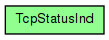

TCP indications, sent by TCP to the application. TCP will set these constants as message kind on messages it sends to the application.
See also: TCPCommand, TCPStatusInfo, TCP
The following diagram shows usage relationships between types. Unresolved types are missing from the diagram.

The following diagram shows inheritance relationships for this type. Unresolved types are missing from the diagram.
// // \TCP indications, sent by TCP to the application. TCP will set these // constants as message kind on messages it sends to the application. // // @see TCPCommand, TCPStatusInfo, TCP // enum TcpStatusInd { TCP_I_DATA = 1; // data packet (set on data packet) TCP_I_URGENT_DATA = 2; // urgent data (set on data packet) TCP_I_ESTABLISHED = 3; // connection established TCP_I_PEER_CLOSED = 4; // FIN received from remote TCP TCP_I_CLOSED = 5; // connection closed normally (via FIN exchange) TCP_I_CONNECTION_REFUSED = 6; // connection refused TCP_I_CONNECTION_RESET = 7; // connection reset TCP_I_TIMED_OUT = 8; // conn-estab timer went off, or max retransm. count reached TCP_I_STATUS = 9; // status info (will carry TCPStatusInfo) }